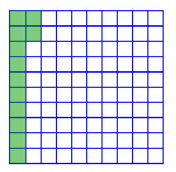
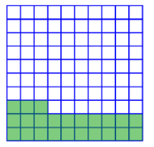
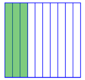
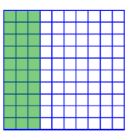
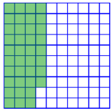
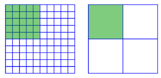
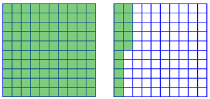

Chapter 2: The Language of Algebra
Section 2.4: Convert Percents, Decimals, and Fractions
Learning Objective(s)
- Describe the meaning of percent.
- Represent a number as a decimal, percent, and fraction.
Introduction
Three common formats for numbers are fractions, decimals, and percents. Percents are often used to communicate a relative amount. You have probably seen them used for discounts, where the percent of discount can apply to different prices. Percents are also used when discussing taxes and interest rates on savings and loans.
The Meaning of Percent
A percent is a ratio of a number to 100. Per cent means "per 100," or "how many out of 100." You use the symbol % after a number to indicate percent.
Notice that 12 of the 100 squares in the grid below have been shaded green. This represents 12 percent (12 per 100).

How many of the squares in the grid above are unshaded? Since 12 are shaded and there are a total of 100 squares, 88 are unshaded. The unshaded portion of the whole grid is 88 parts out of 100, or 88% of the grid. Notice that the shaded and unshaded portions together make 100% of the grid (100 out of 100 squares).
Example 1
What percent of the grid is shaded?

Solution
The grid is divided into 100 smaller squares, with 10 squares in each row. 23 squares out of 100 squares are shaded.
23% of the grid is shaded.
Example 2
What percent of the large square is shaded?

Solution
The grid is divided into 10 rectangles. For percents, you need to look at 100 equal-sized parts of the whole. You can divide each of the 10 rectangles into 10 pieces, giving 100 parts.

30 small squares out of 100 are shaded.
30% of the large square is shaded.
Self Check A
What percent of this grid is shaded?

Three full columns of 10 squares are shaded, plus another 8 squares from the next column. So there are \(30 + 8 = 38\) squares shaded out of 100. This means 38% of the grid is shaded.
Rewriting Percents, Decimals, and Fractions
It is often helpful to change the format of a number. For example, you may find it easier to add decimals than to add fractions. If you can write the fractions as decimals, you can add them as decimals. Then you can rewrite your decimal sum as a fraction, if necessary.
Percents can be written as fractions and decimals in very few steps.
Example 3
Write 25% as a simplified fraction and as a decimal.
Solution
| Write as a fraction. | \(25\% = \dfrac{25}{100}\) | Since % means "out of 100," 25% means 25 out of 100. Write this as a fraction using 100 as the denominator. |
| \(\dfrac{25}{100} = \dfrac{25 \div 25}{100 \div 25} = \dfrac{1}{4}\) | Simplify the fraction by dividing the numerator and denominator by the common factor 25. | |
| Write as a decimal. | \(25\% = \dfrac{25}{100} = 0.25\) | Move the decimal point in 25 two places to the left to get 0.25. |
| Answer | \(25\% = \dfrac{1}{4} = 0.25\) |
Notice in the diagram below that 25% of a grid is also \(\dfrac{1}{4}\) of the grid, as found in the example above.

Notice that rewriting a percent as a decimal takes just a shift of the decimal point. Any percentage \(x\) can be represented as the fraction \(\dfrac{x}{100}\), and any fraction \(\dfrac{x}{100}\) can be written as a decimal by moving the decimal point in \(x\) two places to the left. For example, 81% can be written as \(\dfrac{81}{100}\), and dividing 81 by 100 results in 0.81. People often skip the intermediary fraction step and just convert a percent to a decimal by moving the decimal point two places to the left.
In the same way, rewriting a decimal as a percent (or as a fraction) requires few steps.
Example 4
Write 0.6 as a percent and as a simplified fraction.
Solution
| Write as a percent. | \(0.6 = 0.60 = 60\%\) | Write 0.6 as 0.60, which is 60 hundredths. 60 hundredths is 60 percent. You can also move the decimal point two places to the right to find the percent equivalent. |
| Write as a fraction. | \(0.6 = \dfrac{6}{10}\) | Read the decimal — 6 tenths — and write 6 tenths in fraction form. |
| \(\dfrac{6}{10} = \dfrac{6 \div 2}{10 \div 2} = \dfrac{3}{5}\) | Simplify the fraction by dividing the numerator and denominator by 2, a common factor. | |
| Answer | \(0.6 = 60\% = \dfrac{3}{5}\) |
In the next example, the percent is not a whole number. It's usually easiest to convert the percent to a decimal first, then convert the decimal to a fraction.
Example 5
Write 5.6% as a decimal and as a simplified fraction.
Solution
| Write as a decimal. | \(5.6\% = 0.056\) | Move the decimal point two places to the left. Insert a 0 in front of the 5 (05.6) in order to move the decimal two places to the left. |
| Write as a fraction. | \(0.056 = \dfrac{56}{1{,}000}\) | Write the fraction as you would read the decimal. The last digit is in the thousandths place, so the denominator is 1,000. |
| \(\dfrac{56}{1{,}000} = \dfrac{56 \div 8}{1{,}000 \div 8} = \dfrac{7}{125}\) | Simplify the fraction by dividing the numerator and denominator by 8, a common factor. | |
| Answer | \(5.6\% = \dfrac{7}{125} = 0.056\) |
Self Check B
Write 0.645 as a percent and as a simplified fraction.
To write a fraction as a decimal or a percent, write the fraction as an equivalent fraction with a denominator of 10 (or another power of 10 such as 100 or 1,000), then convert to a decimal and a percent.
Example 6
Write \(\dfrac{3}{4}\) as a decimal and as a percent.
Solution
| Write as a decimal. | \(\dfrac{3}{4} = \dfrac{3 \cdot 25}{4 \cdot 25} = \dfrac{75}{100}\) | Find an equivalent fraction with 100 in the denominator. Since 100 is a multiple of 4, multiply both numerator and denominator by 25. |
| \(\dfrac{75}{100} = 0.75\) | Write the fraction as a decimal with the 5 in the hundredths place. | |
| Write as a percent. | \(0.75 = 75\%\) | Move the decimal point two places to the right. |
| Answer | \(\dfrac{3}{4} = 0.75 = 75\%\) |
If it is difficult to find an equivalent fraction with a denominator of 10, 100, 1,000, and so on, you can always divide the numerator by the denominator to find the decimal equivalent.
Example 7
Write \(\dfrac{3}{8}\) as a decimal and as a percent.
Solution
| Write as a decimal. | \(\dfrac{3}{8} = 3 \div 8 = 0.375\) | Divide the numerator by the denominator: \(3 \div 8 = 0.375\). |
| Write as a percent. | \(0.375 = 37.5\%\) | Move the decimal point two places to the right. |
| Answer | \(\dfrac{3}{8} = 0.375 = 37.5\%\) |
Self Check C
Write \(\dfrac{4}{5}\) as a decimal and as a percent.
Mixed Numbers
All the previous examples involve fractions and decimals less than 1, so all of the percents so far have been less than 100%. Percents greater than 100% are possible as well, and are used to describe situations where there is more than one whole.
In the diagram below, 115% is shaded. Each grid is considered a whole, and you need two grids to show 115%.

Expressed as a decimal, 115% is 1.15; as a fraction, it is \(1\dfrac{15}{100}\), or \(1\dfrac{3}{20}\). Notice that you can still convert among percents, fractions, and decimals when the quantity is greater than one whole.
Numbers greater than one that include a fractional part can be written as the sum of a whole number and the fractional part. For instance, the mixed number \(3\dfrac{1}{4}\) is the sum of the whole number 3 and the fraction \(\dfrac{1}{4}\): \(3\dfrac{1}{4} = 3 + \dfrac{1}{4}\).
Example 8
Write \(2\dfrac{7}{8}\) as a decimal and as a percent.
Solution
| \(2\dfrac{7}{8} = 2 + \dfrac{7}{8}\) | Write the mixed number as 2 wholes plus the fractional part. | |
| Write as a decimal. | \(\dfrac{7}{8} = 7 \div 8 = 0.875\) | Write the fractional part as a decimal by dividing the numerator by the denominator: \(7 \div 8 = 0.875\). |
| \(2 + 0.875 = 2.875\) | Add 2 to the decimal. | |
| Write as a percent. | \(2.875 = 287.5\%\) | Move the decimal point two places to the right. |
| Answer | \(2\dfrac{7}{8} = 2.875 = 287.5\%\) |
Note that a whole number can be written as a percent: 100% means one whole, so two wholes would be 200%.
Example 9
Write 375% as a decimal and as a simplified fraction.
Solution
| Write as a decimal. | \(375\% = 3.75\) | Move the decimal point two places to the left. Note there is a whole number part since the percent is more than 100%. |
| Write as a fraction. | \(3.75 = 3 + 0.75\) | Write the decimal as the sum of the whole number and the fractional part. |
| \(0.75 = \dfrac{75}{100}\) | Write the decimal part as a fraction. | |
| \(\dfrac{75}{100} = \dfrac{75 \div 25}{100 \div 25} = \dfrac{3}{4}\) | Simplify the fraction by dividing numerator and denominator by the common factor 25. | |
| \(3 + \dfrac{3}{4} = 3\dfrac{3}{4}\) | Add the whole number part to the fraction. | |
| Answer | \(375\% = 3.75 = 3\dfrac{3}{4}\) |
Self Check D
Write 4.12 as a percent and as a simplified fraction.
\(4.12 = 412\%\), and the simplified fraction form is \(4\dfrac{12}{100} = 4\dfrac{3}{25}\).
Finding a Percent of a Whole
Learning Objective(s)
- Find a percent of a whole.
A percent, like a fraction, usually represents a portion of a whole. When we know the whole amount, we often want to find a portion of that whole.
When working with fractions, if we knew a gas tank held 14 gallons and wanted to know how many gallons were in \(\dfrac{1}{4}\) of a tank, we would multiply:
\[\frac{1}{4} \cdot 14 = \frac{14}{4} = \frac{7}{2} = 3\frac{1}{2} \text{ gallons}\]Likewise, if we wanted to find 25% of 14 gallons, we convert 25% to a decimal first, then multiply:
\[25\% \text{ of } 14 \text{ gallons} = 0.25 \times 14 = 3.5 \text{ gallons}\]Finding a Percent of a Whole
To find a percent of a whole, multiply the percent, written as a decimal, by the whole amount.
Example 10
What is 15% of \(\$200\)?
Solution
| Write as a decimal. | \(15\% = 0.15\) | Move the decimal point two places to the left. |
| Multiply. | \(0.15 \times 200 = 30\) | Multiply the decimal form of the percent by the whole number. |
| Answer | \(15\%\) of \(\$200\) is \(\$30\). |
Self Check E
What number is 70% of 23?
Summary
Percents are a common way to represent fractional amounts, just as decimals and fractions are. Any number that can be written as a decimal, fraction, or percent can also be written using the other two representations. To convert between forms, remember that percent means "per 100" — move the decimal point two places left to go from percent to decimal, and two places right to go from decimal to percent. To find a percent of a whole, convert the percent to a decimal and multiply by the whole amount.